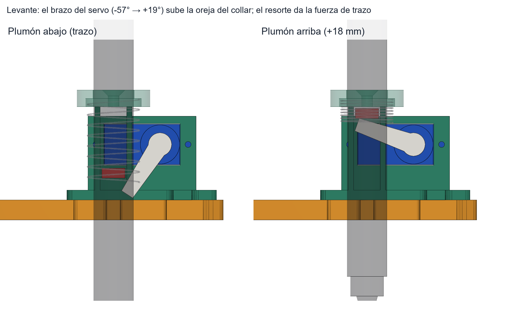
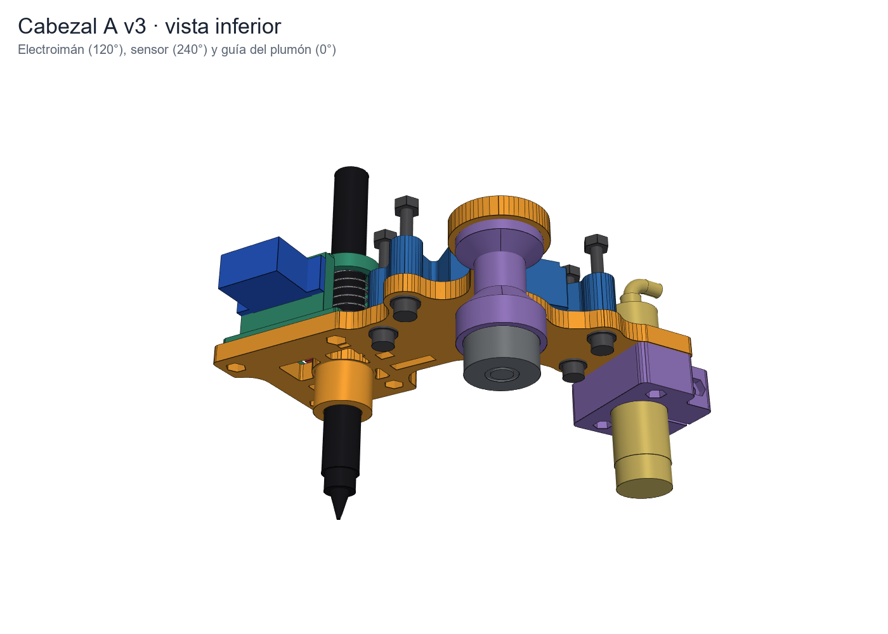

Seis pasos en orden. No pases al siguiente hasta que el anterior salga bien: cada sketch imprime BIEN o FALLA y te dice qué revisar. Marca cada paso al terminarlo y la barra de arriba guarda tu avance en este navegador.
LJ18A3 a 12 V, salida por el optoacoplador PC817 hacia D22. Con metal, D22 baja a LOW.
El cable negro nunca va directo a D22. El sensor trabaja a 12 V y en muchos LJ18A3 la salida sube hacia los 12 V cuando no hay metal. El PC817 separa los dos lados: el sensor solo enciende un LED y el Arduino solo ve un transistor que cierra a GND.
| Desde | Hasta |
|---|---|
| café | +12 V |
| azul | GND de la fuente |
| negro | PC817 pata 2 (cátodo) |
| +12 V → 2.2 kΩ | PC817 pata 1 (ánodo, el punto) |
| PC817 pata 4 (colector) | D22 |
| PC817 pata 3 (emisor) | GND del Mega |
Sensor solo, sin Arduino. Café a +12 V y azul a GND. Acerca la arandela: el LED rojo de la parte trasera debe encender a unos 5–8 mm.
Mide el negro. Multímetro entre negro y GND. Con metal, casi 0 V. Sin metal, flota o marca algo alto: por eso no va directo al Arduino.
Pon el PC817 y la resistencia. Con 2.2 kΩ pasan unos 5 mA por el LED del opto, suficiente para que cierre y poco para el sensor.
Une los GND de la fuente y del Mega antes de conectar el USB.
Sketch firmware/prueba_sensor. Sensor sujeto con su tuerca a un taco, cara hacia arriba.
Abre prueba_sensor.ino, placa Arduino Mega or Mega 2560, sube el sketch.
Monitor Serie a 115200 con Nueva línea. Escribe a y Enter: corre los 6 pasos seguidos. Para repetir uno, escribe su número.
Cada paso termina en BIEN o FALLA con qué revisar. x cancela, ? muestra el resumen, v deja una vista en vivo con pitido.
| # | Qué haces | Qué debe pasar | Si falla |
|---|---|---|---|
| 1 | Nada metálico a 10 cm | 0 lecturas con METAL en 3 s | PC817 al revés, negro y café cruzados, falta GND común |
| 2 | Acercas y alejas la arandela | METAL y luego nada, antes de 15 s | LED del sensor enciende pero D22 no cambia: opto, resistencia, D22 |
| 3 | Pones la arandela a 8, 7, 6 … 0 mm y escribes cada distancia | Estable al 100 % hasta ≥ 4.5 mm | Margen corto sobre los 3 mm del escaneo |
| 4 | Las 4 piezas de la misión a 3 mm | Acero METAL, PLA y madera nada | Hay metal debajo de la pieza (mesa, tornillo) |
| 5 | Nada; el sketch prende el imán y mueve el servo 10 veces | 0 lecturas falsas | Diodo 1N5819, cables separados, GND en un punto |
| 6 | Arandela quieta a 3 mm 5 s, luego 5 pasadas rápidas | 0 cambios con la pieza quieta | Estás en el borde de detección: acércala |
Sketch firmware/prueba_servo. Hazlo antes de poner el brazo del servo.

| Escribe | Hace |
|---|---|
| 90 | servo a 90° |
| + / - | ±1° |
| z | guarda la posición actual como ABAJO |
| a | guarda la posición actual como ARRIBA |
| p | alterna arriba y abajo |
| c 20 | 20 bajadas y subidas |
| d | suelta el servo (lo giras con la mano) |
Escribe 20 (el ABAJO de fábrica). Monta el brazo simple apuntando al plumón, unos 57° bajo la horizontal.
Ajusta con + - hasta que la punta del brazo quede justo bajo la oreja del collar sin tocar la placa. z.
Sube hasta que el plumón levante 18 mm. Si el servo zumba arriba, baja 2°. a.
c 20: las 20 subidas deben verse iguales. Anota ARRIBA y ABAJO.
Abrazadera M18 bajo la placa, cara del sensor 40 mm bajo la cara inferior de la placa.

Tuercas M3 en la abrazadera (2 abajo y 1 lateral). Abrazadera bajo la placa con 2 × M3 × 20 desde arriba.
Mete el LJ18A3 desde abajo. Las dos tuercas M18 que trae no se usan.
Pon un taco de 40 mm entre la cara inferior de la placa y la cara del sensor. Aprieta el M3 × 25 lateral.
Dobla el cable hacia afuera con una curva de unos 6 mm y amárralo con un cincho en la ranura del brazo del sensor.
Repite prueba_sensor pasos 1 y 4 con el sensor ya montado: tornillos y tuercas cerca de la cara pueden dispararlo.
Si tu sensor mide más de 68 mm de largo total, baja la cara lo que sobre. Si no, el cable choca con el final de carrera de J3 al girar.
Sketch firmware/prueba_cabezal, orden x. Brazo 2 con J3 y el cabezal completo, sujeto a un soporte.
Mano lejos del cabezal en el homing y en el paso 4. J3 gira solo. El hongo de PARO (D28) lo detiene; si no lo tienes, ten la fuente de 12 V al alcance.
Motor suelto. Presionas el final con el dedo y Enter.
J3 gira hacia negativo hasta tocar el final, luego va a φ = 0.
Corriges con + - hasta que el plumón quede sobre la línea del brazo 2. Calcula el home3.
De −120° a +121° en pasos de 10°, más lento entre −60° y −40°, donde el sensor y las tuercas M4 pasan bajo el final.
Plumón (0°), electroimán (−120°), sensor (+120°). Respondes s/n en cada una.
Mides la punta abajo y arriba con regla o calibrador; luego 10 ciclos.
Sostienes la tuerca contra la cara; se prende 5 s y la sueltas.
Arandela a 3 mm bajo la cara y luego sin ella.
J3 va y viene 6 veces con el imán prendido; cuenta lecturas falsas.
Fuera del chequeo, el mismo sketch acepta órdenes sueltas para repetir solo lo que falló.
| Orden | Qué prueba | Mira que |
|---|---|---|
| h | homing de J3 | imprime la deriva si ya tenía home: menos de 1° |
| t p · t i · t s | cambio de herramienta | gira ±120° sin rozar y la herramienta queda al frente |
| g 45 · + · ++ | J3 a un ángulo · ±1° · ±10° | no pasa de −120 … +121 |
| p · c 20 | plumón arriba/abajo · 20 ciclos | sube y baja igual, el collar no toca el puente |
| u 110 · d 20 | ángulos ARRIBA / ABAJO en vivo | mismos valores que en el paso 3 |
| e · m | imán ON/OFF · imán 5 s | agarra la tuerca y no se calienta en 1 min |
| n | sensor en vivo | cambia solo con metal delante |
| r 3 | ciclo completo 3 veces | plumón → sensor → imán → plumón sin errores |
El chequeo imprime tres líneas al final. Se pegan en mathbot_mega sin recompilar.
Sube firmware/mathbot_mega. Monitor Serie a 115200.
Pega una línea a la vez y espera el ok antes de la siguiente (el buffer es de 64 bytes).
GUARDAR las escribe en la EEPROM. CFG sin nada las muestra.
Después, en el robot completo: H, T p. Si el plumón no queda sobre la línea del brazo 2, corrige home3 por la diferencia.